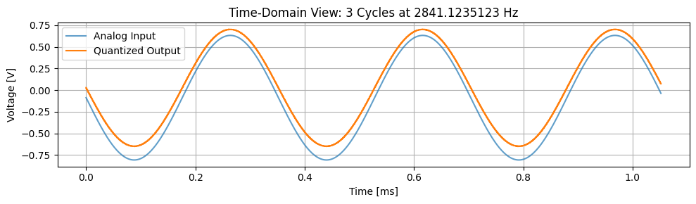
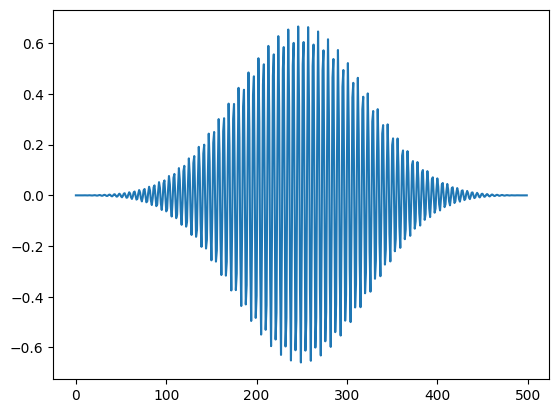
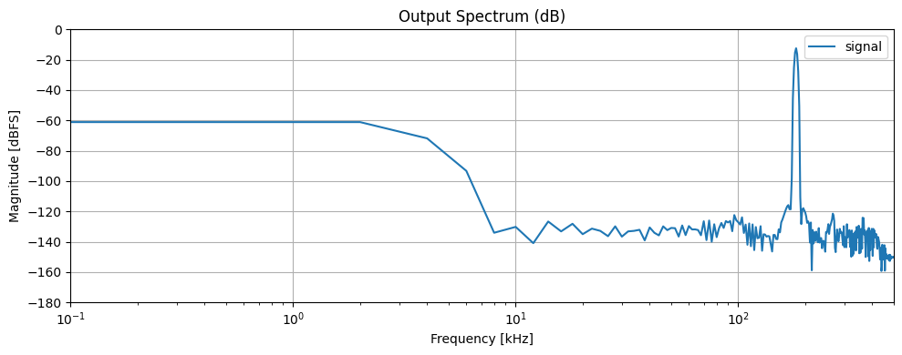

Python Analog Modelling#
from pepper_adc import PepperDataConverter_V3
import matplotlib.pyplot as plt
import numpy as np
# Example ADC setup
vdd = 1.8
osr = 18
adc = PepperDataConverter_V3(
vdd = vdd,
)
print(adc.total_capacitance)
1.870335886674115564e-11
# Generate test sine wave
freq = 2.8411235123e3 # 800 Hz test frequency
sampling_rate=1e6
samples = 50 * osr
times = np.arange(samples) / sampling_rate
analog_input = np.sin(times * (2*np.pi*freq) ) * 0.3*vdd + vdd/30
output = np.array(
[adc.mes1_metrics(elem) for elem in analog_input],
dtype=object
)
digital_output = output[:,0]
sample_error = output[:,1]
quantization_error = output[:,2]
mismatch_error = output[:,3]
plt.subplot(211)
plt.plot(times, quantization_error * (2 ** 10)/ vdd)
plt.plot(times, quantization_error * (2 ** 10)/ vdd)
plt.subplot(212)
plt.plot(times, -analog_input)
plt.plot(times, digital_output)
print(adc._qnf_aout)
print(adc._lsb_sign_dout)
[mpf('0.005102769572366042605416') mpf('-0.001895019957230530163793')]
---------------------------------------------------------------------------
AttributeError Traceback (most recent call last)
Cell In[3], line 13
11 plt.plot(times, digital_output)
12 print(adc._qnf_aout)
---> 13 print(adc._lsb_sign_dout)
AttributeError: 'PepperDataConverter_V3' object has no attribute '_lsb_sign_dout'
from scipy.fft import fft, fftfreq
from scipy.signal import windows
# Apply window for FFT (e.g., Hann to reduce leakage)
window = windows.blackmanharris(len(digital_output))
windowed_output = (output - output.mean(axis=0)) * np.repeat(window[:,np.newaxis],4, axis=1)
# Compute FFT
N = len(digital_output)
fft_data = np.abs(fft(windowed_output, axis=0))
frequencies = fftfreq(N, 1 / sampling_rate)
# Compute magnitude spectrum (single-sided)
magnitude = 2.0 / N * np.abs(fft_data[:N // 2,:])
frequencies = frequencies[:N // 2]
plt.figure(figsize=(10, 4))
plt.semilogx(frequencies / 1e3, 20 * np.log10(magnitude))
plt.title("Output Spectrum (dB)")
plt.xlabel("Frequency [kHz]")
plt.ylabel("Magnitude [dBFS]")
plt.grid(True)
plt.tight_layout()
plt.legend(["signal","sample","quantization","mismatch"])
plt.xlim([0.1, sampling_rate * 0.5e-3])
plt.ylim([ -180, 0])
plt.show()

# Find signal bin and SNDR
signal_bin = np.argmax(magnitude[:,0])
signal_power = np.sum(magnitude[signal_bin-5:signal_bin+5,0] ** 2)
noise_power = np.sum(magnitude[5:,0] ** 2) - signal_power
sndr_db = 10 * np.log10(signal_power / noise_power)
print(f"SNDR ≈ {sndr_db:.2f} dB, ENOB = {(sndr_db-1.72)/6.02:.2f}")
SNDR ≈ 52.67 dB, ENOB = 8.46
# -- Time-Domain Plot --
samples_per_cycle = int(sampling_rate / freq)
n_cycles = 3
n_plot = samples_per_cycle * n_cycles
plt.figure(figsize=(10, 3))
plt.plot(times[:n_plot] * 1e3, -analog_input[:n_plot] + vdd * 0.018, label="Analog Input", alpha=0.7)
plt.step(times[:n_plot] * 1e3, digital_output[:n_plot], where='mid', label="Quantized Output")
plt.xlabel("Time [ms]")
plt.ylabel("Voltage [V]")
plt.title(f"Time-Domain View: {n_cycles} Cycles at {freq} Hz")
plt.grid(True)
plt.legend()
plt.tight_layout()
plt.show()

from scipy.signal import decimate
decimated_output = decimate(digital_output,osr//2)
window = windows.blackmanharris(len(decimated_output))
windowed_output = (decimated_output - decimated_output.mean(axis=0)) * window
plt.plot(windowed_output)
# Compute FFT
N = len(decimated_output)
fft_data = np.abs(fft(windowed_output, axis=0))
frequencies = fftfreq(N, 1 / sampling_rate)
# Compute magnitude spectrum (single-sided)
magnitude = 2.0 / N * np.abs(fft_data[:N // 2])
frequencies = frequencies[:N // 2]
plt.figure(figsize=(10, 4))
plt.semilogx(frequencies / 1e3, 20 * np.log10(magnitude))
plt.title("Output Spectrum (dB)")
plt.xlabel("Frequency [kHz]")
plt.ylabel("Magnitude [dBFS]")
plt.grid(True)
plt.tight_layout()
plt.legend(["signal","sample","quantization","mismatch"])
plt.xlim([0.1, sampling_rate * 0.5e-3])
plt.ylim([ -180, 0])
plt.show()
# Find signal bin and SNDR
signal_bin = np.argmax(magnitude)
signal_power = np.sum(magnitude[signal_bin-5:signal_bin+5] ** 2)
noise_power = np.sum(magnitude[5:] ** 2) - signal_power
sndr_db = 10 * np.log10(signal_power / noise_power)
print(f"SNDR ≈ {sndr_db:.2f} dB, ENOB = {(sndr_db-1.72)/6.02:.2f}")


SNDR ≈ 96.12 dB, ENOB = 15.68